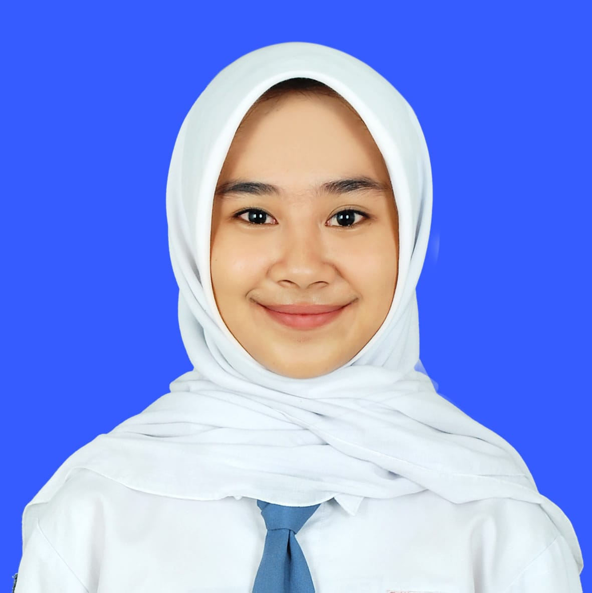

Halo, Saya Aulia Devita Ariski
Saya adalah seorang pelajar yang memiliki minat dalam dunia teknologi dan desain. Saya senang mempelajari hal-hal baru, terutama di bidang pengembangan web dan UI/UX. Bagi saya, setiap ide bisa diwujudkan melalui kreativitas dan kemauan untuk terus belajar.
Lihat Detail Profil